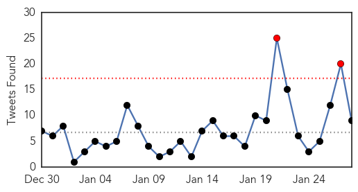
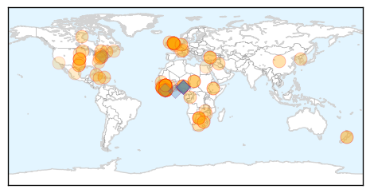
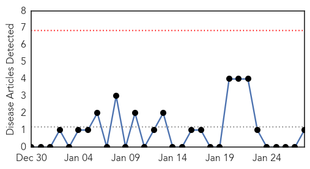
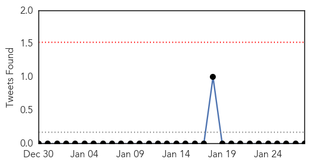

Ebola
30-Day Web Trend
1 alerts, 0 warnings

30-Day Twitter Trend
2 alerts, 0 warnings

Article Locations
Article Confidences

Top Articles:
- 1.000
- Scientists ask if Ebola immunises as well as kills
- 1.000
- Ebola outbreak eases as world's largest treatment centre dismantled in Liberia
- 1.000
- Scientists ask if Ebola immunises as well as kills
- 1.000
- Ghana, Business Advice, Jobs, News, Business Directory, Real Estate, Finance, Forms, Auto
- 1.000
- Ebola outbreak eases as world's largest treatment centre dismantled in Liberia
- 1.000
- Ebola is creating a new epidemic of untreated illness and injury
- 0.999
- How declining Ebola cases could imperil hopes of having vaccines ready
- 0.999
- Turkey to send medical aid to African countries
- 0.999
- Editorial: Improving international responses to Ebola epidemics
- 0.999
- Ebola is on a Steep Decline for Now, But What's the Resurgence Risk?
- 0.998
- Turkey to send medical aid to African countries
- 0.998
- Liberia closes Ebola centre as crisis recedes
- 0.998
- World’s largest Ebola unit dismantled as outbreak retreats
- 0.998
- Guinea sees bump in Ebola cases, group reports vaccine trial results
- 0.998
- Ebola Vaccine Appears Safe, Triggers Immune Response, U.K. Study Finds
- 0.998
- World's largest Ebola unit dismantled as outbreak retreats
- 0.996
- Wellcome Trust investment in Ebola research tops £10 million
- 0.996
- Ebola faces total eradication
- 0.996
- Ebola vaccine trials to begin in Liberia, Guinea and Sierra Leone
- 0.996
- Researcher on the Clock to Improve Early Ebola Detection
- 0.996
- NIH Ebola candidate vaccine has acceptable safety profile
- 0.993
- Ebola vaccine is 'ready' for West Africa after it was tested on 60 British volunteers
- 0.992
- Ebola vaccine is safe, says researchers
- 0.992
- Ebola trial suggests vaccine is safe
- 0.991
- World's largest Ebola unit dismantled as outbreak retreats
- 0.991
- After Ebola, WHO to set up contingency fund, develop 'surge capacity' -
- 0.989
- Liverpool Ebola medic felt "duty-bound" to volunteer
- 0.988
- The World Won't Tolerate Another Pandemic: World Bank President
- 0.987
- Virginia Hospital Center contributes to Ebola fight in Sierra (...)
- 0.987
- West Africa recovers from Ebola outbreak
- 0.986
- Whitby nurse selected for unprecedented Red Cross Ebola mission
- 0.986
- Whitby nurse selected for unprecedented Red Cross Ebola mission
- 0.985
- Food, medicine and education – GIZ support for West Africa continues - Sierra Leone
- 0.983
- AU Summit to Discuss Lessons, Stigma of Ebola
- 0.983
- AU Summit to Discuss Lessons, Stigma of Ebola
- 0.982
- Cautious optimism follows results from trials of early Ebola vaccine
- 0.980
- Missing 5-month-old found, man turns himself in
- 0.980
- Off-duty firefighter rescues drowning girl
- 0.980
- Man shot in neck in SE Baltimore
- 0.979
- China commits $1m to train Ghana health workers in Ebola management
- 0.979
- Heroic Villains
- 0.978
- WHO Executive Board appoints Dr Matshidiso Moeti as new Regional Director for Africa
- 0.971
- Doctor From Botswana Becomes First Female Head of WHO For Africa
- 0.970
- Liberia’s Cuttington University needs help to reopen
- 0.969
- Pres. Sirleaf expresses gratitude
- 0.969
- HEALTH BULLETIN - New Primary Health Care Renewal Policy approved by Cabinet
- 0.967
- Ebola vaccine 'potential to work'
- 0.966
- New Primary Health Care Renewal Policy approved by Cabinet
- 0.965
- Progress in development of a new Ebola vaccine
- 0.964
- How the Peace Corps continues to fight Ebola
Showing top 50 articles...
Top Tweets:
- 0.967
- .@LorisLgr70 Ebola symptômes de la grippe qui se ressemblent. Vous devriez visiter l'hôpital pour être sûr.
- 0.955
- Ebola Update: 22057 confirmed probable & suspected cases reported in 3 most affected countries with 8795 deaths. EbolaResponse
- 0.879
- des symptómes d'Ebola est Une apparition soudaine de fièvre Fatigue douleurs musculaires Maux de tête & Maux de gorge.
- 0.853
- Without proper control measures practically everyone is at risk of contracting Ebola Virus Disease (EVD). EBOLAFACT
- 0.804
- RT: Ebola is declining but medical care for non-Ebola patients is still critical due to collapse of public health system http://t.co/…
- 0.703
- RT: Ebola is still a part of daily life in Freetown. Exclusive photos from the outbreak in Sierra Leone's capital: http://t.c…
- 0.604
- Ebola Outbreak in West Africa update 27 January 2015 http://t.co/GdPPoWOGj6
- 0.537
- RT: Ebola Epidemic Takes a Toll on Sierra Leone’s Surgeons by http://t.co/wJtQJwGMO5…
- 0.523
- If you have been on the front line of the Ebola outbreak as a survivor healthcare provider reporter etc then be part of EbolaStory
MERS
30-Day Web Trend
0 alerts, 0 warnings

30-Day Twitter Trend
0 alerts, 0 warnings

Article Locations

Article Confidences

Top Articles:
Top Tweets:
-
No tweets found for Jan 28, 2015